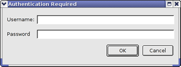

This chapter provides information on how to define Google Earth databases with Google Earth Enterprise Fusion. For information about defining Google Maps databases, see the chapter titled Defining a Map Database.
When you finish defining your projects, you define your database. To define a database, you specify one or more projects whose data functions together on the Google Earth Enterprise Server. You can select up to three projects for a database--one of each type:
Because the majority of your efforts go into defining and configuring projects, it is relatively simple to define a database. You simply select the projects that comprise the database and give it a name.
 . The Database Editor appears with no projects selected.
. The Database Editor appears with no projects selected. Note: The selection in the Type drop-down list near the bottom of this dialog determines the type of projects that appear on the list. Vector Project is automatically selected, so only vector projects appear on the list.
 to create a new folder in the desired location.
to create a new folder in the desired location.
Now you are ready to build your database. See the Building Assets chapter for complete details.
Caution: Assets can not be deleted once they are saved. They can be cleaned, so that they are no longer available to use in Google Earth Enterprise Fusion; see Cleaning Asset Versions in the Building Assets chapter for more information.
To change one of the selected projects, click
 next to the project you want to replace. The Open dialog appears.
next to the project you want to replace. The Open dialog appears.
To remove a project from the database and not include any project of that type, click
 next to the project you want to remove, then select File > Save.
next to the project you want to remove, then select File > Save.
In both cases, Google Earth Enterprise Fusion saves the database in the same place with the same name. If you have already built the database, you must build a new version to make the changes available for publishing.
Search tabs allow Google Earth EC and Google Maps users to search external databases on non-Google servers. For example, if you have a database of property locations that contains specific information that your users need, you can add a search tab call “Property Search” and configure it to search for locations in your property database, even if that database is stored on another server.
The Search Tab Manager allows you to add and pre-configure the standard search tabs to be used throughout Google Earth Enterprise Fusion. See Managing Search Tabs for more information. After you have configured the search tabs in the Search Tab Manager, you can select the search tabs you want to use for each database you define.
Note: Regardless of how many search tabs you add, even if you add only one or two, the custom search tab(s) replace all three default search tabs in Google Earth EC. If you do not create any tabs, Google Earth EC displays the default search tabs.
Note: If you specified search fields for a layer in the selected vector project, the tab label you provided in the Vector Project Editor for that project appears on this pop-up list. See Search Tab for details. You can select that search tab or not.
After you add three tabs, the
 button is disabled.
button is disabled.
, then OK to confirm.
The tab disappears from the Search Tabs dialog, and the
 button is enabled again.
button is enabled again.
After you successfully build a database, you are ready to publish it to a Google Earth Enterprise Server. Publishing a database is fairly straightforward after you set up your server associations. Consult your administrator or refer to the Administration Guide for complete details about setting up server associations.
The first server association on the list in the Server Associations Manager is the default selection on the Server Association drop-down list. The most recently built version of the database is the default selection on the Version drop-down list.

Enter your user name and password, and click OK.
Contact your system administrator if you do not know your user name and password.
A progress dialog shows you the progress of the publishing operation. When the publishing operation is complete, a message confirms that the database was successfully published. If the publishing operation is unsuccessful, see the Common Error Messages chapter for more information.
After you publish your database, you can view it in Google Earth EC.
Caution: If you have logged in to this server with Google Earth EC previously, log out, clear your cache, and log back in. For help with clearing your cache, refer to the Google Earth User Guide.
Google Earth EC displays your database. The Layers panel shows the terrain, imagery, and vector layers in the published database.